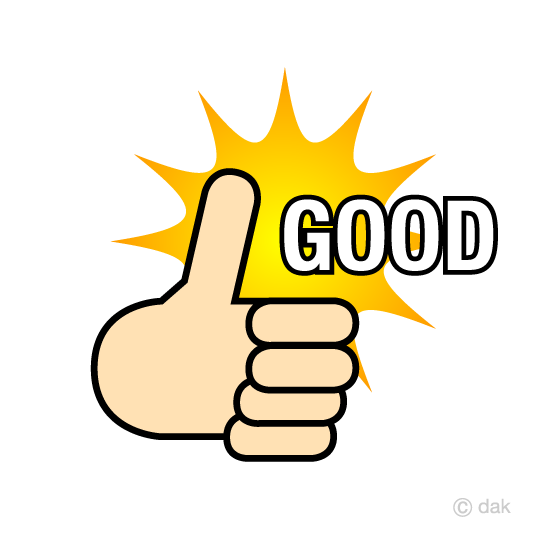

<!DOCTYPE html>
<html lang="ja">
<head>
    <meta charset="UTF-8">
    <title>kanadeのサイト</title>

    <script>

        document.onkeydown = typeGame;  //キー押下時に関数typeGame()を呼び出す


        //文字を格納する配列
        var moji = ["Ａ", "Ｂ", "Ｃ", "Ｄ", "Ｅ", "Ｆ", "Ｇ", "Ｈ", "Ｉ",
            "Ｊ", "Ｋ", "Ｌ", "Ｍ", "Ｎ", "Ｏ", "Ｐ", "Ｑ", "Ｒ",
            "Ｓ", "Ｔ", "Ｕ", "Ｖ", "Ｗ", "Ｘ", "Ｙ", "Ｚ"];

        //キーコードを格納する配列
        var kcode = [65, 66, 67, 68, 69, 70, 71, 72, 73,
            74, 75, 76, 77, 78, 79, 80, 81, 82,
            83, 84, 85, 86, 87, 88, 89, 90];

        //0～25までの乱数を格納する配列
        var rnd = [];


        //グローバル変数群
        var mondai = "";
        var cnt = 0;
        var typStart, typEnd;
        let q_num = 20


        //0～25までの乱数を200個作成して配列rndに格納する関数
        function ransu() {
            for (var i = 0; i < q_num; i++) {
                rnd[i] = Math.floor(Math.random() * 26);
            }
        }


        //タイピングゲームの問題をセットする関数
        function gameSet() {
            //問題文とカウント数をクリアする
            mondai = "";
            cnt = 0;

            //乱数作成関数の呼び出し
            ransu();

            for (var i = 0; i < q_num; i++) {
                mondai = mondai + moji[rnd[i]];
            }

            //問題枠に表示する
            document.getElementById("waku").innerHTML = mondai;
        }


        //キー入力を受け取る関数
        function typeGame(evt) {
            var kc;  //入力されたキーコードを格納する変数

            //入力されたキーのキーコードを取得
            if (document.all) {
                kc = event.keyCode;
            } else {
                kc = evt.which;
            }
            //入力されたキーコードと、問題文のキーコードを比較
            if (kc === kcode[rnd[cnt]]) {
                //以下、キーコードが一致した時の処理

                //最初の1文字が入力された時間を記録する
                if (cnt === 0) {
                    typStart = new Date();
                }

                cnt++; //カウント数を＋１にする

                //全文字入力したか確認
                if (cnt < q_num) {
                    //問題文の頭の一文字を切り取る
                    mondai = mondai.substring(1, mondai.Length);

                    //問題枠に表示する
                    document.getElementById("waku").innerHTML = mondai;
                } else {
                    //全文字入力していたら、終了時間を記録する
                    typEnd = new Date();

                    //終了時間－開始時間で掛かったミリ秒を取得する
                    var keika = typEnd - typStart;

                    //1000で割って「切捨て」、秒数を取得
                    var sec = Math.floor(keika / 1000);

                    if (sec >= 30) {
                        document.getElementById('gazo').innerHTML = '';
                    } else {
                        document.getElementById('gazo').innerHTML = '';
                    }

                    //1000で割った「余り(%で取得できる）」でミリ秒を取得
                    var msec = keika % 1000;

                    //問題終了を告げる文字列を作成
                    //問題枠にゲーム終了を表示
                    document.getElementById("waku").innerHTML = "GAME終了　時間：" + sec + "秒" + msec;
                }
            }
        }
    </script>
</head>

<body onload="gameSet()">

<div id="waku" style="text-align:center;"></div>
<div id="gazo" style="text-align:center;"></div>

</body>
</html>
